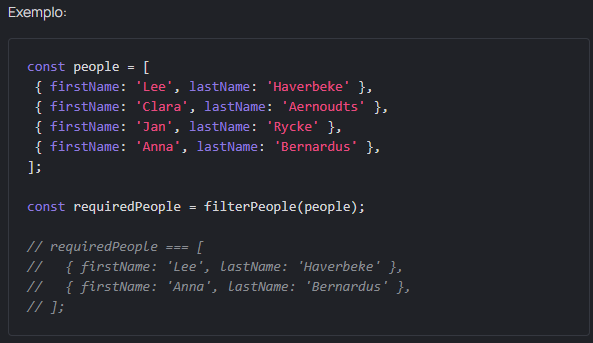

Tarefa: Filter data
Intro
Olá! Precisamos encontrar todos os usuários com nomes curtos (não maiores que 4 letras) e sobrenomes longos (mais de 8 letras).
Crie uma função filterPeople, que pega um array de people e retorna uma matriz com todos os usuários que correspondem aos dois critérios ao mesmo tempo. Nós recomendo usar o método filter.
